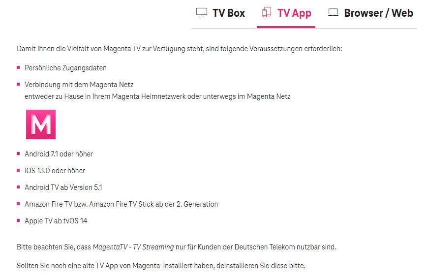

Seit ca. 4 Wochen kann ich mich nicht mehr in die Magenta TV App einloggen. Ich wurde automatisch ausgeloggt und komme nicht mehr hinein. Wenn ich mich versuche einzuloggen, dreht sich kurz ein Kreis, dann sehe ich wieder meinen Benutzername und das Passwort - nicht mal eine Fehlermeldung kommt. Andere Apps wie zB Amazon prime od Joyn funktionieren problemlos. Hab einen Sony Bravia TV, ca 8 Jahre alt, der kann doch nicht zu alt sein??
Ich habe, auch nach mehrmaligen Telefonaten mit der Serviceline, alles mögliche ausprobiert:
App deinstalliert - neu installiert
Neues Passwort, neuer Benutzername
TV auf Werkseinstellung zurück gesetzt
Auf meinem Handy funktioniert die App. Ich weiß jetzt echt nichts mehr, geht es vielleicht jemandem anderen auch so?
Lg Claudia
Servus
@Unterhosenkopfi
,
Versuche mal am TV-Gerät in der "Magenta TV App" den Cache und den Datenspeicher zu löschen.
Möglicherweise klappt es danach wieder, und du kannst dich wieder Einloggen.
PS: Die Betreiber geben meistens an, dass die TV-App bei den TV-Geräten mit Androiden ab dem Baujahr 2018 funktioniert.
Bei älteren Modellen kann es schon mal zu Problemen kommen.
Frage aber mal dazu bei der Technikline 0676 200 7777 an, ob die App auf deinem 8-jährigen Model noch nutzbar ist.
Am 3.7.2024 um 12:38 schrieb Maverick:
Servus
@Unterhosenkopfi
,
Versuche mal am TV-Gerät in der "Magenta TV App" den Cache und den Datenspeicher zu löschen.
Möglicherweise klappt es danach wieder, und du kannst dich wieder Einloggen.
PS: Die Betreiber geben meistens an, dass die TV-App bei den TV-Geräten mit Androiden ab dem Baujahr 2018 funktioniert.
Bei älteren Modellen kann es schon mal zu Problemen kommen.
Frage aber mal dazu bei der Technikline 0676 200 7777 an, ob die App auf deinem 8-jährigen Model noch nutzbar ist.
Danke für Deine Antwort! Den Cache und den Datenspeicher hab ich auch schon gelöscht - ohne Erfolg. Es ist wie verhext
🤷♀️
Hi Claudia
@Unterhosenkopfi
, das klingt knifflig
🤔
.
Ist vielleicht ein Update beim TV Gerät vorhanden/ausständig?
Die Internetverbindung funktioniert sonst einwandfrei?
Andere Inhalte, welche das Internet im Hintergrund benötigen laufen?
Hier gibt es noch eine Anleitung für die Installation der App am TV Gerät.
https://www.magenta.at/hilfe-service/services/hardwaresupport/device/magenta-tv/app
Hier findest du auch die Voraussetzungen für die Nutzung der TV App:
https://www.magenta.at/faq/entry/~technische-anfrage~fernsehen~allgemein/~MagentaTV_Voraussetzungen~master
Hab dir einen Screenshot davon gemacht.

LG Karo
Ich befürchte das die Hardware/Firmware des Sony die "M" App nicht mehr unterstützt. Kauf dir einen Firestick oder Google Chromecast, an den HDMI anstecken und alles wird gut.
Am 6.7.2024 um 10:04 schrieb pefra:
Ich befürchte das die Hardware/Firmware des Sony die "M" App nicht mehr unterstützt. Kauf dir einen Firestick oder Google Chromecast, an den HDMI anstecken und alles wird gut.
Das ist auch mein Gedanke gewesen das die Hardware (TV) wegen dem Alter, keine Unterstützung der Magenta TV App erfährt.
Würde auch eines der Beiden genannten empfehlen.
")